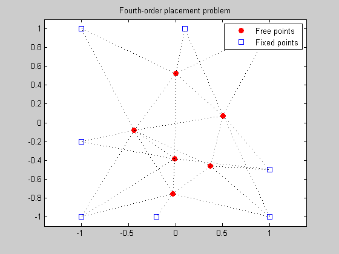
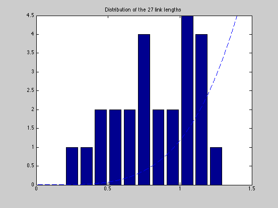

Figure 8.17: Fourth-order placement problem
linewidth = 1;
markersize = 5;
fixed = [ 1 1 -1 -1 1 -1 -0.2 0.1;
1 -1 -1 1 -0.5 -0.2 -1 1]';
M = size(fixed,1);
N = 6;
A = [ 1 0 0 -1 0 0 0 0 0 0 0 0 0 0
1 0 -1 0 0 0 0 0 0 0 0 0 0 0
1 0 0 0 -1 0 0 0 0 0 0 0 0 0
1 0 0 0 0 0 -1 0 0 0 0 0 0 0
1 0 0 0 0 0 0 -1 0 0 0 0 0 0
1 0 0 0 0 0 0 0 0 0 -1 0 0 0
1 0 0 0 0 0 0 0 0 0 0 0 0 -1
0 1 -1 0 0 0 0 0 0 0 0 0 0 0
0 1 0 -1 0 0 0 0 0 0 0 0 0 0
0 1 0 0 0 -1 0 0 0 0 0 0 0 0
0 1 0 0 0 0 0 -1 0 0 0 0 0 0
0 1 0 0 0 0 0 0 -1 0 0 0 0 0
0 1 0 0 0 0 0 0 0 0 0 0 -1 0
0 0 1 -1 0 0 0 0 0 0 0 0 0 0
0 0 1 0 0 0 0 -1 0 0 0 0 0 0
0 0 1 0 0 0 0 0 0 0 -1 0 0 0
0 0 0 1 -1 0 0 0 0 0 0 0 0 0
0 0 0 1 0 0 0 0 -1 0 0 0 0 0
0 0 0 1 0 0 0 0 0 -1 0 0 0 0
0 0 0 1 0 0 0 0 0 0 0 -1 0 0
0 0 0 1 0 -1 0 0 0 0 0 -1 0 0
0 0 0 0 1 -1 0 0 0 0 0 0 0 0
0 0 0 0 1 0 -1 0 0 0 0 0 0 0
0 0 0 0 1 0 0 0 0 -1 0 0 0 0
0 0 0 0 1 0 0 0 0 0 0 0 0 -1
0 0 0 0 0 1 0 0 -1 0 0 0 0 0
0 0 0 0 0 1 0 0 0 0 -1 0 0 0 ];
nolinks = size(A,1);
fprintf(1,'Computing the optimal locations of the 6 free points...');
cvx_begin
variable x(N+M,2)
minimize ( sum(square_pos(square_pos(norms( A*x,2,2 )))))
x(N+[1:M],:) == fixed
cvx_end
fprintf(1,'Done! \n');
free_sum = x(1:N,:);
figure(1);
dots = plot(free_sum(:,1), free_sum(:,2), 'or', fixed(:,1), fixed(:,2), 'bs');
set(dots(1),'MarkerFaceColor','red');
hold on
legend('Free points','Fixed points','Location','Best');
for i=1:nolinks
ind = find(A(i,:));
line = plot(x(ind,1), x(ind,2), ':k');
hold on
set(line,'LineWidth',linewidth);
end
axis([-1.1 1.1 -1.1 1.1]) ;
axis equal;
title('Fourth-order placement problem');
figure(2)
all = [free_sum; fixed];
bins = 0.05:0.1:1.95;
lengths = sqrt(sum((A*all).^2')');
[N2,hist2] = hist(lengths,bins);
bar(hist2,N2);
hold on;
xx = linspace(0,2,1000); yy = (6/1.5^4)*xx.^4;
plot(xx,yy,'--');
axis([0 1.5 0 4.5]);
hold on
plot([0 2], [0 0 ], 'k-');
title('Distribution of the 27 link lengths');
Computing the optimal locations of the 6 free points...
Calling SeDuMi: 259 variables (14 free), 164 equality constraints
------------------------------------------------------------------------
SeDuMi 1.1 by AdvOL, 2005 and Jos F. Sturm, 1998, 2001-2003.
Alg = 2: xz-corrector, Adaptive Step-Differentiation, theta = 0.250, beta = 0.500
Split 14 free variables
eqs m = 164, order n = 193, dim = 274, blocks = 82
nnz(A) = 559 + 0, nnz(ADA) = 2450, nnz(L) = 2780
it : b*y gap delta rate t/tP* t/tD* feas cg cg prec
0 : 9.59E+000 0.000
1 : 5.29E+000 4.87E+000 0.000 0.5083 0.9000 0.9000 1.20 1 1 3.5E+000
2 : 1.45E+000 1.82E+000 0.000 0.3742 0.9000 0.9000 1.54 1 1 1.4E+000
3 : 8.67E+000 5.56E-001 0.000 0.3049 0.9000 0.9000 0.72 1 1 6.1E-001
4 : 1.48E+001 1.87E-001 0.000 0.3370 0.9000 0.9000 0.54 1 1 2.6E-001
5 : 1.90E+001 4.36E-002 0.000 0.2325 0.9000 0.9000 0.72 1 1 6.6E-002
6 : 2.03E+001 8.49E-003 0.000 0.1950 0.9000 0.9000 0.90 1 1 1.3E-002
7 : 2.06E+001 1.80E-003 0.000 0.2120 0.9000 0.9000 0.98 1 1 2.9E-003
8 : 2.06E+001 4.72E-005 0.000 0.0262 0.9900 0.9901 1.00 1 1 1.7E-004
9 : 2.06E+001 1.59E-008 0.000 0.0003 0.9900 0.9803 1.00 1 1 3.0E-006
10 : 2.06E+001 4.73E-010 0.000 0.0297 0.9900 0.9902 1.00 1 1 8.2E-008
11 : 2.06E+001 1.03E-010 0.000 0.2171 0.9000 0.9071 1.00 2 2 1.7E-008
12 : 2.06E+001 8.68E-012 0.181 0.0845 0.9900 0.9466 1.00 2 2 1.5E-009
iter seconds digits c*x b*y
12 0.2 Inf 2.0646323444e+001 2.0646323511e+001
|Ax-b| = 1.3e-008, [Ay-c]_+ = 1.7E-011, |x|= 2.0e+001, |y|= 5.6e+001
Detailed timing (sec)
Pre IPM Post
2.003E-002 2.403E-001 1.001E-002
Max-norms: ||b||=1, ||c|| = 1,
Cholesky |add|=0, |skip| = 0, ||L.L|| = 150.402.
------------------------------------------------------------------------
Optimal value (cvx_optval): +20.6463
Status (cvx_status): Solved
Done!
 